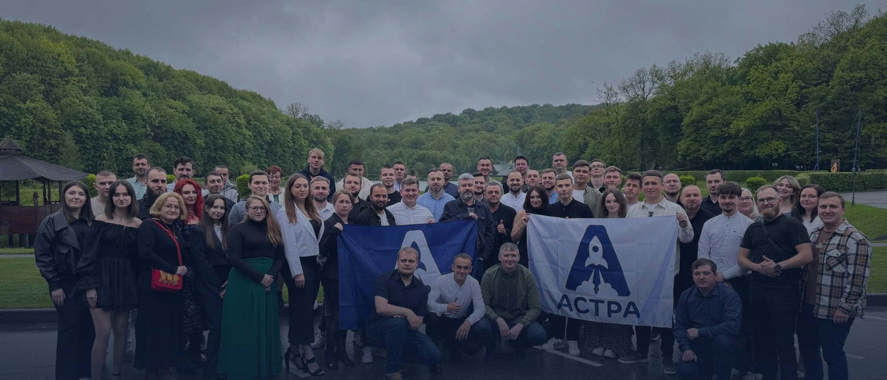
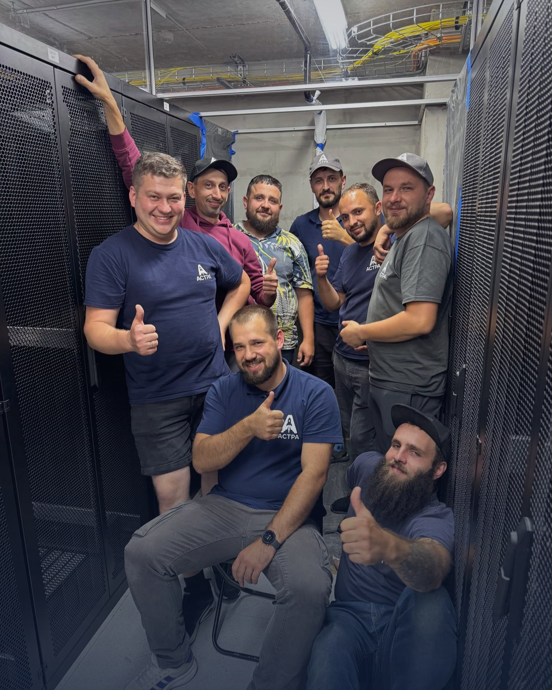
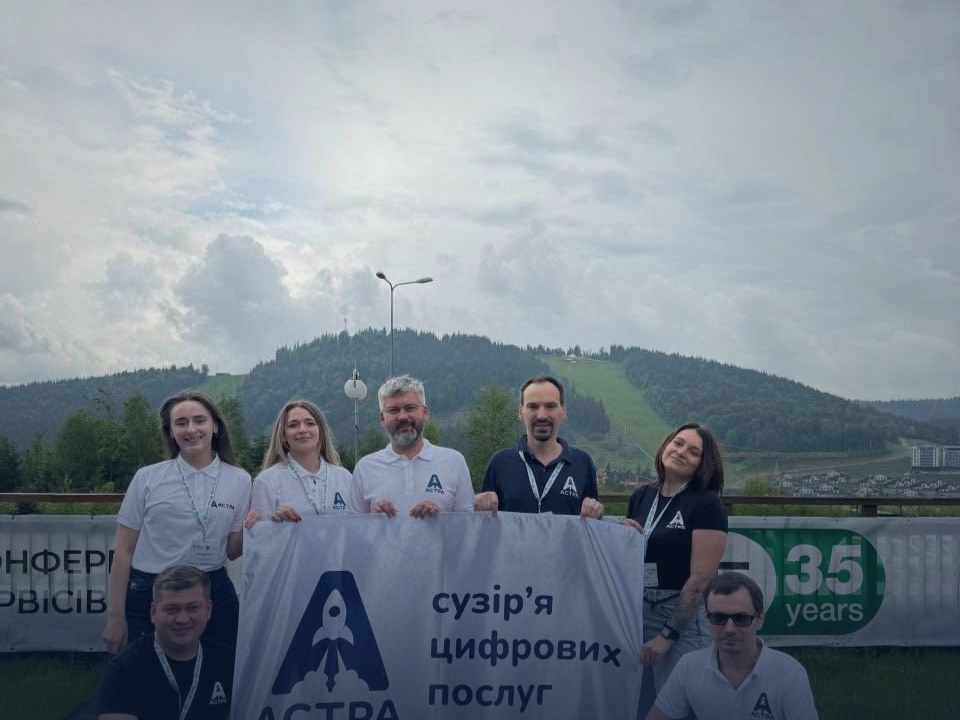

Інтернет
Оптика FTTB / PON, лінійка швидкостей від 100 Мбіт/с до 10 Гбіт/с, підтримка IPv6 та енергонезалежна мережа з резервним живленням.
Детальніше →
Львівський оператор, що виріс у компанію комплексних цифрових послуг: інтернет, ТБ, безпека, мережі та хмара.

Ми працюємо на українському ринку широкосмугового доступу до мережі Інтернет з 2004-го року. За цей час ми збудували енергонезалежну оптичну мережу, розгорнули власний центр обробки даних і зібрали команду інженерів, які щодня тримають зв'язок та безпеку наших абонентів у робочому стані.
Нашою місією є забезпечення Вас послугами зв'язку із використанням сучасних технологій, дбаючи про Ваш комфорт у віртуальному світі. Ми працюємо на українському ринку широкосмугового доступу до мережі Інтернет з 2004-го року, і сьогодні пропонуємо Вам:
Бренд «компанія АСТРА» працює з 2004 року. Юридична особа ТзОВ «АСТРА-ЛЬВІВ» зареєстрована 2013 року. уточнити
Від оптичної лінії до клієнта і до хмарного сервера у власному ЦОД: ми відповідаємо за всю інфраструктуру зв'язку та безпеки, а не за окремий її фрагмент.
Оптика FTTB / PON, лінійка швидкостей від 100 Мбіт/с до 10 Гбіт/с, підтримка IPv6 та енергонезалежна мережа з резервним живленням.
Детальніше →АСТРА TV у власній мережі без додаткових кабелів, а також MEGOGO, Sweet.tv та youtv. Відкладений перегляд для найпопулярніших каналів.
Детальніше →Відеонагляд з будь-якої точки планети, де є доступ до Інтернету, розумна домофонія, СКУД та в'їзні групи для дому й бізнесу.
Детальніше →Проєктування і обслуговування корпоративних мереж, СКС, Wi-Fi та ВОЛЗ, піринг і супровід інфраструктури з боку NOC.
Детальніше →Колокація у власному дата-центрі у Львові, VPS та виділені сервери. Вашому обладнанню не страшні блекаути та перебої у провайдера.
Детальніше →Жива технічна підтримка цілодобово: телефоном 0 800 20-38-38, у Telegram @astraispbot та у Viber «АСТРА».
Підтримка →За кожним підключенням стоять інженери та власна інфраструктура. Ми будуємо мережу й обслуговуємо її самостійно, тому відповідаємо за якість на кожному етапі.


Усі телевізійні канали ліцензійні, послуги надаються за публічним договором-офертою. Перелік дозвільних документів і показники якості доступні в розділі підтримки.
Ми постійно в пошуку талантів та завжди раді новим обличчям. В членів нашої дружньої команди завжди ринкова заробітна плата, безкоштовний інтернет та телебачення, безлімітні кава та чай.
Переглянути актуальні вакансії можна на сайтах work.ua та robota.ua.
Залиште заявку, і ми вам перетелефонуємо. Перевіримо покриття за вашою адресою та підберемо рішення.
З 9.00 до 21.00. Ми поважаємо вашу приватність.